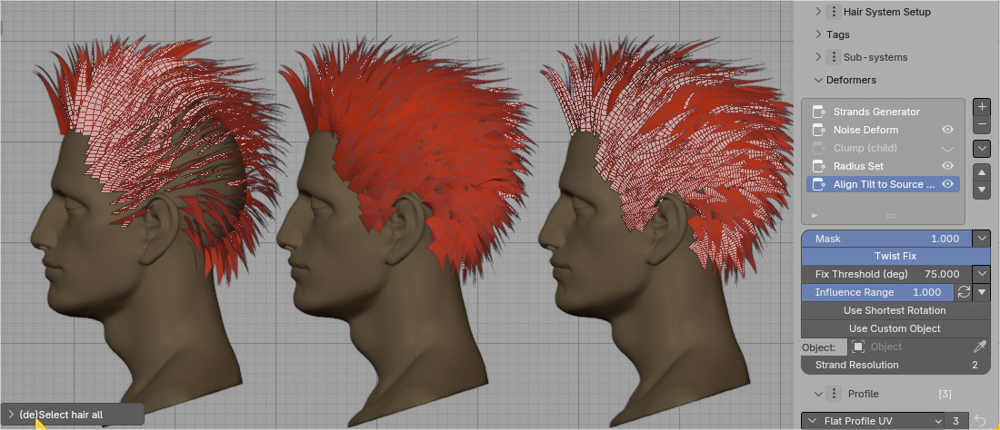

Hair Deformers¶
Think of them as nodes inside Hair System modifier. They give you ability change chair look: add noise, curls, snap to surface etc.
Deformers are stacked on top of each other, just like Blender modifiers.
Note: Some deformers (e.g. clump, twist, braids) will only work, if Hair System (to which deformer belongs to) is Set as Child
Note: Most of the input properties of Deformers can be masked by input masks like: vertex group, texture, length mask etc.
Animation¶
Attach Curves UV¶
Attach strands roots to source mesh UVs. Without it hair won't follow animated mesh ('Surface Deform' modifier will not work).
Bake/Cache Hair¶
Save hair strands into cached memory. They will no longer be editable, but will be faster to animate, since they will not be re-generated on every frame change.
Surface Deform¶
Same as blender built-in modifier. Allows hair to follow source mesh deformation (by rig or shape keys).
Note: You may want to use Bake deformer first, so that strands will not be regenerated on every frame
Physics¶
You can add collision objects, control: wind, gravity, damping etc. Not perfect yet, but can give some nice results. For more advanced physics simulation we may need to wait for native blender geo-nodes physics integration.
Note: You may want to use Bake deformer first, so that strands will not be regenerated on every frame
Note: If you notice some jittering, try reducing gravity and increasing damping.
For now self collisions are disabled, since you would have to subdivide strands a lot, to get good results. Long hair simulation may not look the best. But at least new HTool 4.x physics does not exploade like it used to in HT 3.x
Follow Proxy¶
Above I groomed procedural punk hair guides (first Hair System), using 'Proxy curve' - without having to bake first hair system into 'real' geometry (which would be destructive operation). If you do not like the edits, you can update and re-generate proxy mesh again
Follow Proxy (mesh or curve) deformer. It can be used to:
- transfer cloth sim from Proxy Mesh, to your hair system
- manually groom procedurally generated hair with Proxy Curve. This way you can test hair edits, without having to bake hair
Assign Group ID¶
Assign Group ID attribute to strands. After baking hair system you can use this to select strands by group ID.
Braids (Child)¶
Clump child strands to Guide/Parent strands (FIRST tag) in shape of Braids. Set Hair System as child first
Color Set (System)¶
It will allow your to colorize haircards material with generated SystemColor attribute. You can enable `Use HSV sliders' and combine them with Input Masks to create some nice effects
Clumps (Child)¶
Clumps child strands toward parent strands. Set Hair System as child first
Curls¶
We add curls effect to second Hair System and play with the: Frequency and Phase. The amount of curls (and clumps) is determined by parent strand count. Child-parent setup is needed
Delete Strands¶
Remove strands based on input mask. In video above I used Randomize input mask to remove some % of hair
Factor Set¶
It allows to adjust Factor attribute, which is used in Hair Shader to blender between root and tip color
Generators¶
Duplicate Strands¶
Simple duplication of existing strands
Braid Generator¶
Each strand will be duplicated 2 times (3 strands with original one), and braided together. Works best with 'Circular' Profile
The Idea in above video is:
- Take single strand, and convert it to 3 braided ones with 'Braid Generator'
- Duplicate each sub-strand few times with Duplicate Strands deformer
- Add some randomization with Noise deformer and UV Region Distribute deformer
This should make it more volumetric looking, since braid will be made from multiple textured haircards, rather than single one.
Instance on Strand¶
Instance any mesh on hair Strands (can be used to eg. add tie and tail on the end of braid) - since HTool 2.44
Mirror¶
Mirror hair, with optional option of bisect (remove one half of hair first, then mirror the remaining part)
Move in/out of Surface¶
Embed Roots¶
Helps to push hair roots into surface. Best to used before Align Tilt deformer, since it can lead to haircard twisting
Note: If you want even more precise control use Project Roots modifier on top of this deformer
Push Out¶
Pushes hair strands away from the surface. Use to preventing clipping through character geometr or adding volume for layered hair styles
Attach To Surface¶
Attach hair to surface. Useful when wanting to 'glue' hair roots to character geometry (scalp)
Move to Border¶
In the video above, a source mesh is created using two half-sphere meshes. We use the "Move to Border" deformer to move the strands to the edge of this mesh. Then, we apply the 'Track To Mesh' deformer, to clump tips of strands together
Note: Often I like to move hair to border but only for strands that are within certain distance to the border. This can be done by using Border Edge Distance input mask. This way we can keep some strands in the middle of the scalp, while moving others to the border.
Snap¶
Snap hair to source surface (could be used for wet hair effect)
Lengthen¶
Extends hair strand endings while preserving their overall shape and maintaining the natural curvature at the tips
Lengthens hair strands from the root. In the video above, this helps achieve better scalp coverage for the character
Noise¶
Adding Uniofomr noise, to break up the straightness of the strands and then bit of 'Per Strands' noise to add some randomness to the strands
- Global Scale - Scales overall noise effect. Default value 1.0 is good for default cube (2 meters in size). For human head (which is around 1/10th of its size) set it to 0.1
- Uniform Noise - it will give overall flow to the hair, breaking up the straightness of the strands.
- Per Strands Noise - this will apply unique noise to each strand, giving it a more messy look.
- Frequency - controls the detail of the noise. If set too high, it will make hair look 'bumpy' and unnatural.
- Influence Range - Blend between original (straight) strand and the noise effect.
- Flatten along Normal - it will remove the normal component of the noise, making it look more like than a 'wave'.
Note: Higher values of noise can push hair into the character head. To prevent this, use Push Out deformer after the noise deformer.
Radius Set¶
Set Radius - for hair tapering, strand width randomization, etc. Can also guide Curls amplitude or Braid size - for child Hair Systems
Resample¶
Increase or decrease number of points per strand. Useful for optimizing hair, or adding more resolution to give hair smoother look.
Simplify Strands¶
Assigns less points to shorter strands. Usually provide best results
Simplify by Angle¶
Simplify strands by angle between two segments. If angle is below 'Angle Threshold' value, then point will be removed
Simplify Strands HQ¶
High Quality Strands Simplification (based on modified version of Visvalingam–Whyatt algorithm) - it should preserve overall shape of the strand better than 'Simplify Strands', however in practice basic Simplify Strands works quite well
Subdivide at Angle¶
Add more points to strands, where angle between two segments is above 'Angle Threshold' value
Resample Adaptive¶
It uses Resolution Multiplier. For example value 2.0 will double the points count of each strand. Above I combined it with Length Mask to give more resolution to longer strands
Roll Strands¶
Similar to Blender build-in Roll. It has option to roll along sampled surface normal
Scale¶
Scale hair up or down. With trim deformer we can reduce length of hair, but Scale deformer helps to make them longer.
Slide Points¶
Give more resolution to hair root or tips (depending on 'Influence Range'), by 'sliding' points along the curves
Smooth Strands¶
Smooth out the strands
Straighten Strands¶
Straighten out the strands
Tag¶
Assign Tag¶
Here we assign R tag to right side of head (masking it with vertex group). Then in 'Scale' Hair System that is set to Strands Filter we resize these tagged strands with Scale deformer
Note: Assigning any tag e.g. X will create negative tag 'X, for example if we create tag
RIGHTwith some strands, then tag'RIGHTwill contain opposite set of strands.
Delete Tagged Strands¶
Simple delete strands operation based on their Tag. In video above I removed strands tagged as R then GUIDE strands (bit hard too see, since they are covered by other strands)
Tilt¶
Add Tilt¶
Add tilt to hair strands. If 'Flip Probability' is 0.5 - then half strands will be rotated clockwise and half counter clockwise
Align Tilt¶
Aligns hair normal to surface normal
Twist Fix if enabled, it will try to minimize twisting between two adjacent points, if their tilt angle is above 'Threshold' value.
Use Shortest Rotation attempts to minimize the rotation angle, but may cause some hair cards to face inward (see image below). This shouldn't be an issue if your hair shader is double-sided, though Blender has a known issue where back-faces render with flipped normals, making them appear darker.

No Tilt Alignment (left) | Align to Surface (middle) | Align with Use Shortest Rotation(right)
Align Tilt to Parent¶
Aligns tilt to Parent (Guide) strands. Hair card backfaces are shown in blue. Great for Dragon Ball hairstyle :)
Align Tilt to Target¶
Aligns tilt to target surface (hair normal will point outside of target surface)
Align Tilt to Mesh Border¶
Align strands tilt to border of source surface (usually scalp). Backfaces are shown in blue
Force Align if checked, it will align curve and force curve normal to point outside border edge. If unchecked, tilt will be aligned to border, but curve normal will point with the 'flow' - see video above.
Track To:¶
These modifiers allow you to model hair by sculpting a guide mesh or curve, to which the hair tips will be attached/glued. This is particularly useful for shorter hairstyles such as beards, eyebrows, and shaved sides.
Track to Mesh¶
This feature 'glues' hair tips to a target mesh object. First, position the tracked mesh object (its origin) near the hair. Then press the Bind Track Mesh button to prevent hair tips from sliding and attach hair tips to guide mesh. After binding, you can edit or sculpt the tracked object, and the hair tips will follow it.
If Separate Target per Island is enabled then only strands from the nearest mesh island (based on target origin location) will be affected
Settings
Bend Factor - Controls whether strands are straight (0) or bent (1). Bending direction, length, and origin can be adjusted using the parameters below
Bend Target - Use: mesh normal (default) or strand tangent, to define the bending direction
Bend - Push Out - Controls the length of the Bend Target vector. Higher values increase the amount of bending
Bend at Root/Tip Factor - place Bending Target vector origin at: root (0) or tip (1). Default: 0.5 bending is applied at center of strand
Note: Closest active/affected island is determined by Tracked object origin. Move it to change 'active' island.
Note: For non-destructive workflow it is good idea to manually create 'bind' shape-key, just after 'Bind Track Mesh' button is pressed. Then work on new 'Deform' shape-key. If you do not like the edits, you can always go back to 'bind' shape-key.
Track to Curve¶
Similar to 'Track to Mesh', but it will 'glue' hair tips to target curve object.
Use Bind button to prevets hair tips from 'sliding' on tracked curve surface
Demo of 'Cornrows' feature with Track to Curve deformer. In this case the 'Samples Count' parameter defines density of 'cornrows'
Note: Closest active/affected island is determined by Tracked object origin. Move it to change 'active' island.
Note: Hair Tool Curve Shape Keys can be used to switch between 'bind' and 'deform' shape. This way you can work on non-destructive way, and restore original 'bind' shape at any time.
Second example of making 'Cornrows' hairstyle with Track to Curve deformer
Trim¶
It will shorten strands roots and/or tips. Best to use with randomization mask
Trim by Mesh¶
It cuts hair strands by target mesh surface. In video above I used planar surface, drawn in Wire mode
Twist¶
Twist effect requires to set Hair System to be set as child. For best effect is is good idea to place it after Clump deformer
Profile Distribute¶
Mesh Profile or Multi Curve Profile holds profile objects list for instancing on strands, but it does not tell which strand will receive which profile object. This is where 'Profile Distribute' deformer comes in.
It will tell which strand will receive which profile object, based 'Profile_ID' attribute, assigned to each strand.
You can use multiple 'Profile Distribute' Deformers, and stack them on top of each other (think of them as layers). In video above, I used RED and GREEN profile objects as base layer, then added PURPLE on top - masked by vertex group
UV Region Distribute¶
Hair Profile holds UV Boxes/Regions amount and dimensions, but it does not tell which strand will receive which UV Region. This is where 'UV Region Distribute' deformer comes in - it will assign random (or masked) UV Region to each strand.
Note: use multiple 'UV Region Distribute' deformers + Input Masks, to achieve layered UVs effect (see video below),
Example use of multiple 'UV Regions Distribute' Deformers, to stack them on top of each other (as layers). Region ID_2 as base layer + Region ID_0 on top - masked by vertex group
Note:
UV Region Distributeis often created automatically when hair system is added